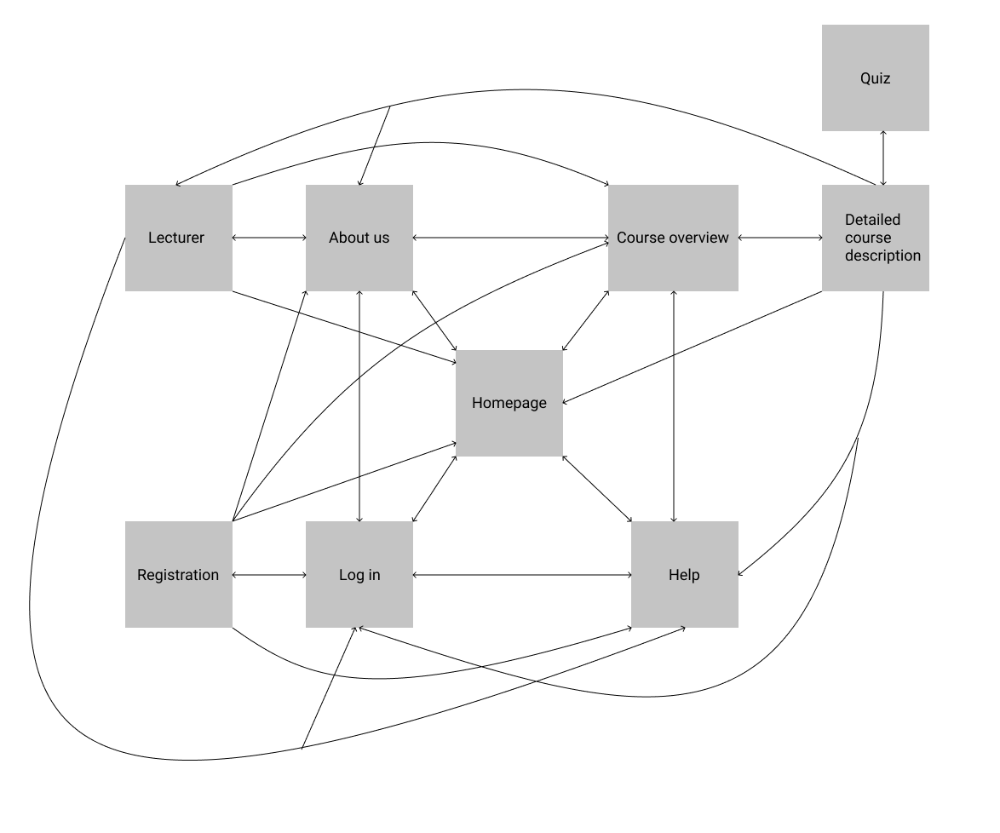
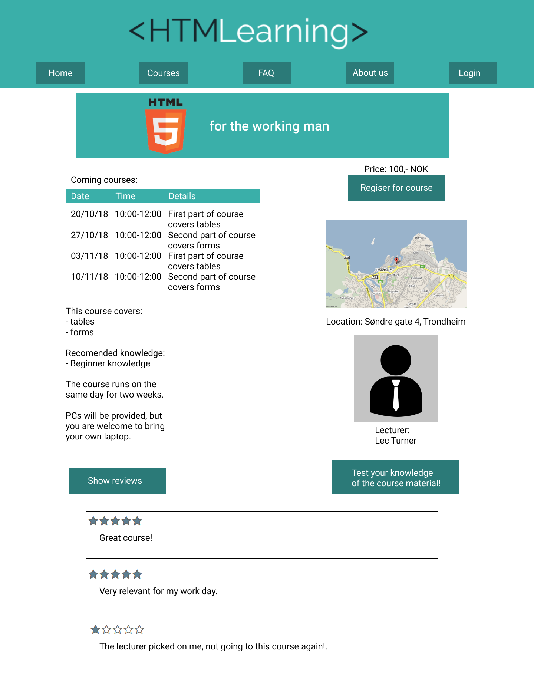

by Martin Skurtveit, Joakim Fremstad, Erlend Marius Ommundsen, Lærke Svendsen
Written 08.10.2018
Administrative Details
Client name: HTMLearning
Website Name: HTMLearning
Contact person: Skybert Bertulfsen
Purpose, goals, and audience
The company HTMLearning, aims to promote and sell their courses through a website. The site shall inform users about upcoming courses and the company in general. In this way the company wishes to reach more of their user base, and make it easier to use their services. The goal is to increase the number of participants in the courses. As a second goal the company wishes to become more known, and improve their reputation. The websites intended audience is people that want to learn HTML and additional web technologies, but mainly students and people who need it for work. “HTMLearning” should cater to every level of coding skill. One challenge with this audience is the wide variety of devices they use. This could prove challenging when trying to implement a consistent design.
Navigation Structure
In order to give the user a short overview of the main pages of the site, the navbar at the top links to the main choices and reasons for visiting the site. This way the user can easily move from one part of the site to another without having to move back to the front page.
When the user have made their goal of visiting the site clear by choosing one of the main pages, they can then be shown more detailed information about the choice they have made. The pages with details about lecturers and courses are more specific pages, and therefore well suited to this purpose. The user can still change their mind about their purpose for visiting, as the navbar will be available from all pages.
The registration of a user is nested under the login page because the purpose of logging in is still the goal, and registration is something presumably only done once by each user.
In the list below each root point can be accessed from the menu bar. As the menu bar is available on all pages, these pages will be accessible from all other pages. The children of these pages are accessible only from these pages.
Front page
Courses overview
Detailed course description (a page for each course type)
Link to the page of the lecturer of this course
Quiz if the knowledge level of the course requires it
Help/FAQ
About us
With a list of lecturers
Login
Registration in login page

Sitemap: Map of the different pages on this site and where you can go from them.
The pages Lecturer and Detailed course description are not merely a single page, but many individual pages for each of the lecturers and courses offered from HTMLearning. The skeleton for these pages will be the same though, and only the content will be different.
Design and layout
The goal of the site will be to get as many course takers as possible. Our main focus when it comes to the design of the web page is therefore minimalism, ability to navigate with ease and user friendliness. We will try to to achieve this by having clear and contrasted colors, not having overcrowded pages and by hopefully having an intuitive layout. The navigation bar will always be visible, even when scrolling. By doing this, the user will always be able to go where it wants to go. These main pages will have sub pages where the user can obtain additional information. The target group of the site is people who want to learn HTML or need to learn it for work related reasons. Both young people and adults should be greeted with enough information to apply for a course. Our client requested that the logo also should be visible, along with the navigation bar, at all times. Visitors will hopefully, because of the logo, remember the name and brand.
General styling:
Fonts:
Muli for headlines
Roboto for general text
Font-sizes:
Frontpage will have a logo (image), not text
Headlines: 40 px;
Text: 18px;
All pages
Full width at the top and some spacing between images/text and the browser window below.
Navigation bar
Buttons will have a small icon (32px x 32px) and text (18px)
The buttons appearance will change when hovered over and when clicked.
Logo
A picture of the HTMLearings logo will be visible either at the top of the page or in the upper left corner
Colors:
#17252A
#2B7A78
#3AAFA9
#DEF2F1
#FEFFFF
Content
Mockup and description of homepage, navigation bar and footer
The frontpage is what the user will see first when they navigate our website, therefore it’s important to have an attractive,
but also intuitive frontpage. We decided that this color will attract the users attention along with the huge banner. It is also
important that the site is intuitive, the user can scroll down to reach the homepage, but we also added buttons to give the viewer
more control. We haven’t fully decided what the objects on the homepage should link to, right now the idea is for it to be an
introduction to our website with links to other parts of the website. Another idea is to have a news feed with links to own articles,
the articles can include recent news, tips for coding or links to helpful pages like https://www.w3schools.com/html/. The links
are put inside frames consisting of text and a picture, whereas the frame will float left or right. The size
of the picture should be 150x150.
A navigation bar should link to the most essential parts of our website. We decided to make it horizontal in the top of the screen,
it’s supposed to be sticky if the user scrolls down. This should give the user control of what happens and lets them navigate easily
across the website. The navigation bar should cover the full width of the screen, on all platforms.
In the footer we put info about HTMLearning, including contact information and localization. This will always be at the bottom of
every page, covering the full width. The contact information will be to the left and the localization on the right, with a map.
The image contains the frontpage, navigation menu and the footer, the contents of the page are yet to be decided.
Mockup and description of courses overview
All the different course types available are shown in an overview, with each type within a colored box and space between boxes to
easily separate the types. Each box is clickable and redirects to a page for the specific course type with more detailed info and
the option to register for the course. The box is the same color as the buttons of the menu and will change background color on
mouseover, to make it clearer that it is clickable.
Information about price and the date of the next course is shown to make it easier for the user to decide whether they are interested
in learning more about the course or not.
Courses overview: An overview for the different courses this site provides.
Mockup and description of course-page
These pages offers all information relevant to the specific course type. The information at the top is deemed most relevant, with
less relevant information going down the page. A sidebar to the right with key information about price, location and the lecturer is
shown for easy access to this information, and because each link further (price with the register button, location to a map, and
lecturer to the lecturer page). If a quiz is available for the course this will also be shown in this bar.
Reviews are hidden by default in order to not bombard the user with too much information, but can be shown by clicking the
“Show reviews” button.

Course: A more detailed page for a specific course.
Mockup and description of FAQ
The FAQ-page contains a list of frequently asked questions. Answers are hidden until a user clicks on them. They will the slide
down beneath the question in text that is smaller the the questions. The question should change to a slightly lighter color when it
is hovered over, this will indicate that it is clickable.
With this page, the client wants to provide helpful information about the page and themselves. It will provide info about such as how
to sign up for a course, where the client is located, where the physical courses are located etc.
The questions will be centered, and the text will float to the left. The questions will have font-size 22px and the answers will have
font-size 18px.
Frequently asked questions: When you click a question it expands and shows an answer.
Mockup and description of About us
The about us page contains information about the client, such as the aim and services it provides. Additionally it contains an
overview of their lecturers. This page will give customers and potential customers information that might be of their interest.
On top of the page, there will be a few sentences about the client. Below the text, there will be some pictures on the left which will
be of employees, coursetakers and an example of code. On the right, there will be a box with a text about what the clients general
mission is. On the bottom of the page, there will be boxes with text with a tiny bit of info about each lecturer. The boxes will have
circular pictures of the lecturer that is described inside the box.
The biggest image will be 250 x 350, the smaller ones will be 125 x 165. The circular images will be 120 x 120.
About us: Information about the company and a list over employees.
Mockup and description of lecturers-page
The lecturers page will provide the users with information about each and every lecturer they might want to know more about. With this page the client wishes that the coursetakers should be able to make taking courses on “HTMLearning” a more personal experience. Knowing a bit about the ones lecturing you, might help with that.
The page will have a picture on the right side of the lecturer in question. On the left side, there will be a short text with information concerning the lecturer. Below the text and pictures, there will be buttons. The buttons will cycle through the list of the lecturers the client has at their disposal.
The picture will be 300 x 400 and the buttons will be 120 x 40.
Lecturers: A dynamic list of each lecturer.
Mockup and description of login and sign up
The login and registration is done in one page, separated by a tab just above the forms. The entirety of the page will be centered in a box. In this box the user will be able to create an account on the site, or login with as an existing user. There will be input fields for first name, last name, e-mail address, password and the confirmation of the password in the sign up tab. The login tab will only have input fields for the existing users’ e-mail address and password. The form will also do some client-side validation on the email and on the length of the username and password.
The point of this page is obviously to let users have accounts with which they are able to log in with.
The box will be 375 x 500, the sign up-/login button will be 150 x 50 and the tabs will be 187.5 x 100.
Log in: Let's the user log in to an account.
Sign Up: Let's the user sign up to our website by creating an account.
Mockup and description of the quizzes
The quiz is a multiple choice quiz (radiobuttons) with technical questions about the course material. Every question has four alternatives where only one of them is correct. The answers are validated by javascript (see below). The progress bar at the bottom shows the user which questions have been answered right or wrong, and how many questions are left of the quiz. This gives the user a feeling of progress, and an indication of how well their doing.
Clicking the “Previous question” button takes the user to the previous question, and allows the user another chance at answering right. Since this is only a causal quiz, and not a requirement of the user to register for the course, the option to redo a question is open.
The user can at any time quit the quiz by clicking back to the detailed course page they came from with the “Back to course page” button.
At the end of the quiz the user will be presented with their score, and a recommendation of whether they would benefit from taking the course. The quiz can of course also be used after taking a course to remember what was being taught.
Quiz: The user can test their knowledge of the course content.
Minimum Requirements
We've come up with some ideas to reach the minimum requirements goal and decided to make these js-functions:
FAQ (help.js)
On the FAQ page we want the questions to be visible, but not the answers. However when the user clicks on a question, the answer should roll out under the question. When the user clicks the question again, the answer should roll back up and disappear.
Registration for a course and as a user (registration.js and user.js)
When a user registers for a course, a notification should appear confirming the registration.
The same should happen when a user registers a profile on the webpage.
Pre-tests for courses (quiz.js)
A quiz to help users understand which course is the most appropriate given their previous knowledge. It will keep a total score during the quiz and at the end it will give the user an evaluation indicating if the course would be too easy, hard or just perfect.
Dynamically load lecturer info (lecturer.js)
We want to load the information about lecturers and courses from a JSON-file, in order to increase the maintainability of the webpage.
Plan
A good website requires a good structure, below is an overview of the files hierarchy, followed by a plan for each file with deadlines. Changes might occur and will be documented.
Note that the lecturers page is one document loaded dynamically, while the courses pages each have their own file. Even though both these pages are pages with the same layout only different information, we felt that the courses pages would have too much different information and links for it to be conveniently stored in a JSON-file. This may also allow lecturers and administrators to easily make individual changes to their course page.
File hierarchy
img/
logo.png
favicon.ico
lecturers
person_1.png
person_2.png
css/
main.css
navbar.css
footer.css
js/
help.js
registration.js
login.js
lecturer.js
quiz.js
index.html
navbar.html
footer.html
courses_overview.html
courses/
working_man.html
student.html
about.html
lecturers.html
help.html
login.html
quiz.html
Backlog
File name
Description
In charge
Deadline
index.html
A plain introduction site for the website.
navbar.html
A navigation menu to access essential parts of the website.
footer.html
A bar with contact information and the location of the offices.
courses_overview.html
An overview for the different course types.
about.html
A page including information about the firm
help.html
An FAQ-based page to help users
help.js
Javascript for FAQ
registration.html
A page for user registration
login.html
A page where users can log in
courses/*.html
A more detailed description of each course
lecturers.html
An overview of every lecturer
quiz.html
A page to test previous knowledge for a course
(test_procedure.html)
Instructions for user during usability testing.
(test_results.html)
Everyone in the group asks one person to participate in the usability testing.